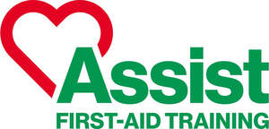

Trade Mark Journal No.2025/045 7 November 2025
UK00004251811 20 August 2025 (41,44)

- Class 41
- Training services relating to first aid; Educational services relating to first aid; Vocational education relating to first aid; Provision of information and preparation of progress reports relating to education and training; Advice relating to medical training; Medical education services; Personnel training; Educational and training services; Education and training services in the field of occupational health and safety; Health and fitness training; Educational and training services relating to healthcare; Teaching services relating to the medical field; Staff training in the use of electronic equipment; Training services relating to health and safety; Medical tuition services.
- Class 44
- Emergency assistance services in the medical field; Provision of medical assistance; Medical assistance services; Medical assistance consultancy provided by doctors and other specialized medical personnel; Providing medical support in the monitoring of patients receiving medical treatments; Medical assistance consultancy provided by doctors and other specialized medical personnel; Medical testing for fitness evaluation; Medical evaluation services; Nursing, medical; Emergency assistance services in the medical field; Medical consultations; Medical examination; Services for the preparation of medical reports.
Heather Kingdon
Representative: Clive Bonny